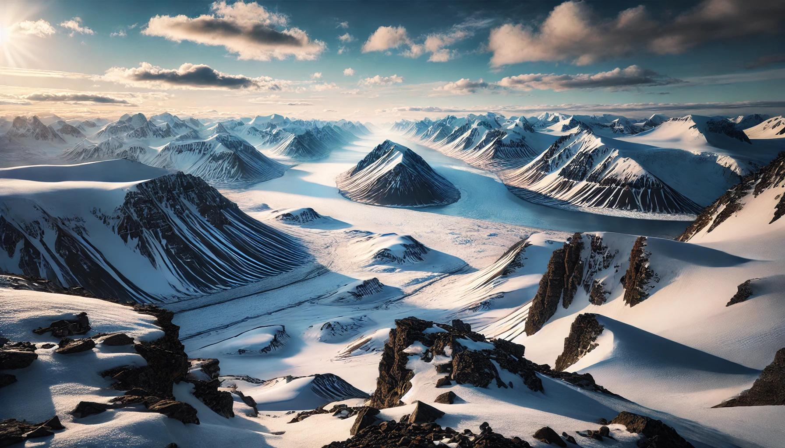
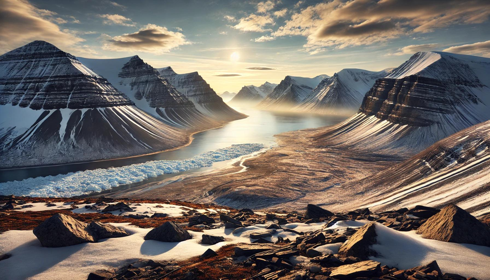
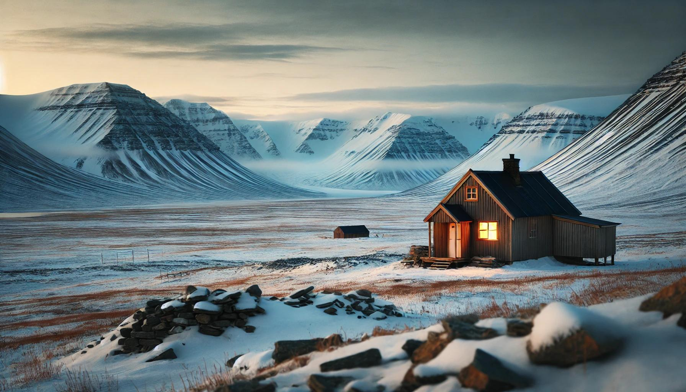

Home
About Us
Contact
Sign In
Sign up
Hover me
Svalbard
1 / 3

2 / 3

3 / 3

❮
❯
Where is it?
Travel Tips
➡Pack for extreme cold: Even in summer, it’s chilly. Winter can drop to -30°C (-22°F), so layers are key.
Merino wool or synthetic base layers, an insulated jacket, and windproof
outer layers are essential. A good pair of thermal gloves and face protection
are a must for winter.
➡Safety with polar bears: Polar bears are a real concern there, especially outside of Longyearbyen. Local law
actually requires anyone outside settlements to carry a firearm. If you’re
with a tour, they’ll have safety covered, but always stay alert and never
roam alone in the wilderness.
➡Go on a guided tour: Svalbard has stunning landscapes, but the terrain is tricky, and it’s easy to
get lost or stranded. Snowmobiles, dog sledding, or even glacier hikes are best
enjoyed with a guide to keep things safe.
➡Mind the daylight (or lack of it): From mid-April to late August, it’s the midnight sun, meaning no
nighttime. In winter (November to February), it’s polar night, with 24-hour
darkness. Midnight sun is great for summer activities, but the polar
night is magical for seeing the Northern Lights.
➡Respect the wildlife and environment: Svalbard has fragile ecosystems. Leave no trace, follow all park
guidelines, and give wildlife like reindeer and Arctic foxes
plenty of space.
➡Check your insurance: Medical services are limited, and evacuation can be pricey. Make sure your insurance
covers remote travel and any adventure activities you’re planning